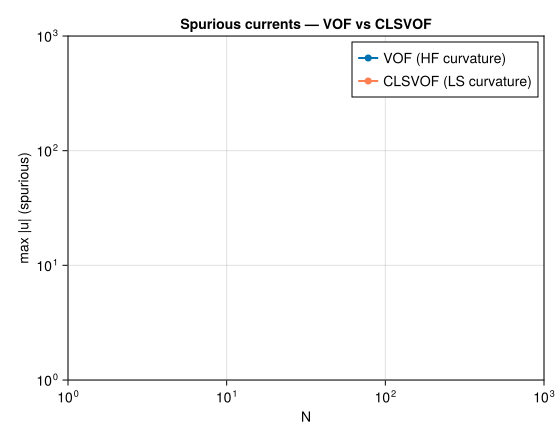

Static Droplet –- Laplace Pressure & Spurious Currents
Problem Statement
A circular droplet at rest in a quiescent fluid is the canonical test for surface tension accuracy in multiphase solvers. In equilibrium, the Laplace law relates the pressure jump across the interface to the curvature:
\[\Delta p = p_\text{in} - p_\text{out} = \frac{\sigma}{R}\]
where $\sigma$ is the surface tension coefficient and $R$ is the droplet radius. Any deviation from this law indicates an error in the curvature computation or the surface tension force model.
Spurious currents
In a perfect continuous formulation, a circular droplet at rest would remain exactly stationary: the surface tension force is balanced by the pressure gradient, and the velocity is identically zero. However, on a discrete lattice, the curvature computed from the VOF field $C$ is not perfectly uniform along the interface. These discrete curvature errors create local force imbalances that drive small parasitic velocities near the interface, known as spurious currents.
Spurious currents are a fundamental issue in all multiphase methods (VOF, level-set, diffuse interface). Their magnitude depends on:
- The curvature computation method: height-function (HF) gives second-order accurate curvature on Cartesian grids; finite-difference methods are less accurate
- The force model: the CSF (Continuum Surface Force) model $\mathbf{F} = \sigma\kappa\nabla C$ localises the force at the interface via the VOF gradient
- The interface resolution: more cells across the interface reduce curvature errors
This test quantifies both the Laplace pressure accuracy and the spurious current magnitude. It is a standard Gerris/Basilisk validation case (Popinet 2009).
VOF curvature vs CLSVOF curvature
Two curvature computation strategies are available in Kraken.jl:
VOF with height-function (HF) curvature: the height function is computed by summing $C$ values along columns perpendicular to the interface. Curvature is then obtained from finite differences of the height function. This method is second-order accurate but can be noisy near under-resolved regions where the stencil fails.
CLSVOF with level-set (LS) curvature: the level-set field $\phi$ (a smooth signed distance function) is used to compute curvature as $\kappa = \nabla \cdot (\nabla\phi / |\nabla\phi|)$. Because $\phi$ is smooth by construction (redistanced at each step), the curvature is inherently less noisy. The force is still applied using the VOF gradient $\nabla C$ for precise localisation.
Geometry
A smooth circular droplet ($\tanh$ profile, width $\approx 2$ cells) of radius $R = N/4$ sits at the centre of a fully-periodic $N \times N$ box. The density ratio is $\rho_l / \rho_g = 1000$.

Simulation File
Download: static_droplet.krk
Simulation static_droplet D2Q9
Define N = 128
Define R = 32
Domain L = N x N N = N x N
Physics nu = 0.1 sigma = 0.01 rho_l = 1.0 rho_g = 0.001
Module twophase_vof
Initial { C = 0.5*(1 - tanh((sqrt((x-N/2)^2 + (y-N/2)^2) - R) / 2)) }
Boundary x periodic
Boundary y periodic
Refine drop { region = [20, 20, 108, 108], ratio = 2 }
Run 5000 stepsThe optional Refine block doubles the resolution in a rectangular region around the droplet. This improves the curvature computation where it matters most (at the interface) without increasing the cost in the far field. For the convergence study below, we omit refinement to isolate the effect of uniform grid resolution.
Code
using Kraken
N = 128
R = N ÷ 4
# VOF simulation (height-function curvature)
result_vof = run_static_droplet_2d(; N=N, R=R, σ=0.01, ν=0.1,
ρ_l=1.0, ρ_g=0.001, max_steps=5000)
# CLSVOF simulation (level-set curvature)
result_cls = run_static_droplet_clsvof_2d(; N=N, R=R, σ=0.01, ν=0.1,
ρ_l=1.0, ρ_g=0.001, max_steps=5000)Results –- VOF
Volume fraction, pressure profile, and spurious currents

The pressure profile (centre panel) shows a clear step at the interface: the pressure inside the droplet is higher than outside, consistent with the Laplace law. The step is sharp ($\approx 2$ cells wide), confirming that the $\tanh$ initialisation produces a well-resolved interface.
The velocity field (right panel) reveals the spurious currents: small parasitic velocities localised at the interface, forming a quadrupolar pattern aligned with the lattice axes. These currents are an artefact of the discrete curvature computation and do not correspond to any physical flow. Their magnitude (typically $10^{-4}$ to $10^{-3}$ in lattice units) sets the noise floor for any simulation involving surface tension.
Laplace pressure accuracy
Δp_vof = result_vof.Δp
Δp_ana = result_vof.Δp_analytical
println("VOF: Δp = ", round(Δp_vof, sigdigits=4),
", analytical = ", round(Δp_ana, sigdigits=4),
", rel. error = ", round(abs(Δp_vof - Δp_ana) / abs(Δp_ana) * 100, digits=1), "%")
println("VOF: max|u| = ", round(result_vof.max_u_spurious, sigdigits=3))Convergence Study –- Spurious Currents
We run the static droplet at three resolutions ($N = 64, 128, 256$) with both VOF and CLSVOF, keeping the ratio $R/N = 1/4$ constant. The maximum spurious velocity is measured after 5000 steps of relaxation.
N_list = [64, 128, 256]
spurious_vof = Float64[]
spurious_clsvof = Float64[]
for Ni in N_list
Ri = Ni ÷ 4
rv = run_static_droplet_2d(; N=Ni, R=Ri, σ=0.01, ν=0.1,
ρ_l=1.0, ρ_g=0.001, max_steps=5000)
push!(spurious_vof, rv.max_u_spurious)
rc = run_static_droplet_clsvof_2d(; N=Ni, R=Ri, σ=0.01, ν=0.1,
ρ_l=1.0, ρ_g=0.001, max_steps=5000)
push!(spurious_clsvof, rc.max_u_spurious)
end
The key observations from the convergence plot:
CLSVOF produces lower spurious currents than VOF at all resolutions. The smooth level-set field $\phi$ yields a more uniform curvature along the interface, reducing the force imbalances that drive parasitic velocities.
Both methods converge with grid refinement: spurious currents decrease as the interface becomes better resolved. The convergence rate is approximately second order for VOF (HF curvature) and slightly better for CLSVOF.
The
Refineblock in the.krkfile (not used in this convergence study) can further improve curvature accuracy by locally doubling the resolution around the droplet, achieving the benefits of a finer grid without the full cost.
Practical implications
For simulations where spurious currents must be minimised (e.g., slow capillary flows, droplet coalescence), CLSVOF with level-set curvature is the recommended approach. For faster flows where the physical velocities are much larger than the parasitic velocities, the simpler VOF method with height-function curvature is usually sufficient.
References
- Scardovelli & Zaleski (1999) –- Direct numerical simulation of free-surface and interfacial flow
- Popinet (2009) –- Accurate adaptive solver for surface-tension-driven interfacial flows
- Kruger et al. (2017) –- The Lattice Boltzmann Method: Principles and Practice